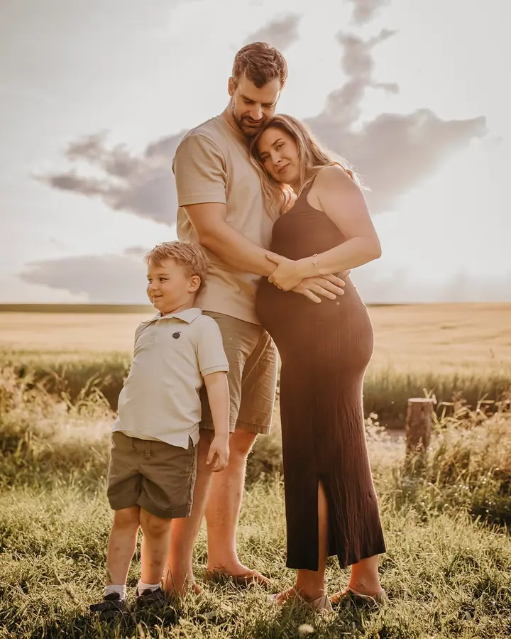
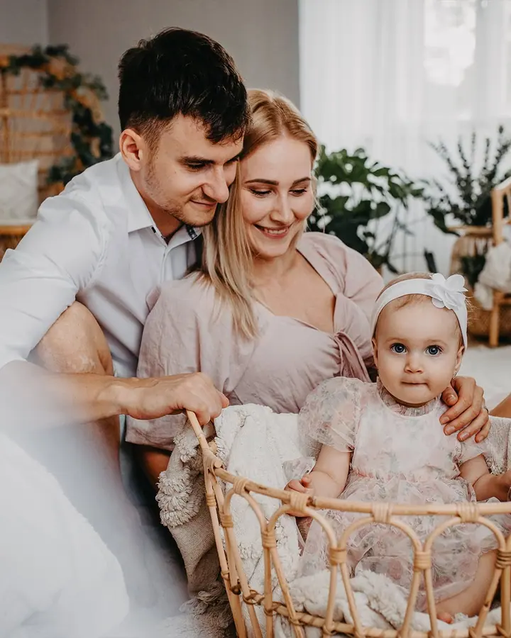
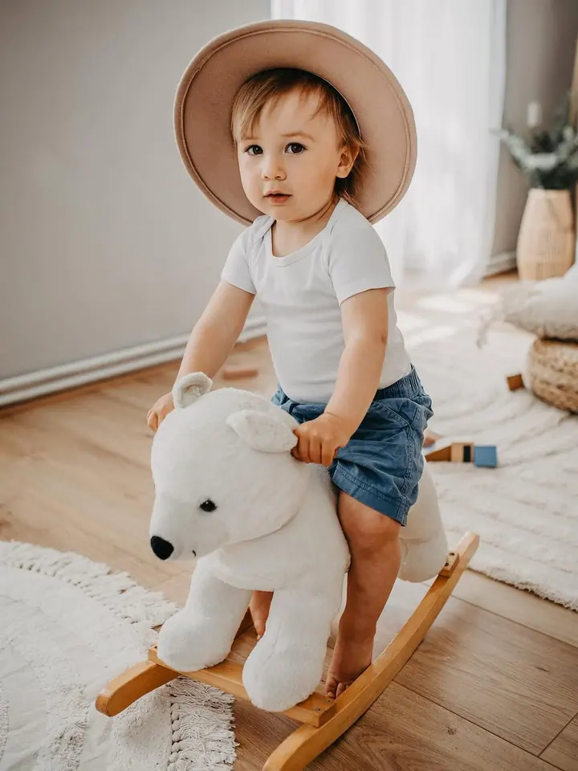

Rodinné focení
Focení celé rodiny v ateliéru nebo venku v přírodě. Během roku připravuji i sezónní focení, třeba podzimní nebo vánoční.

Jmenuji se Gabriela Rydlová a fotím rodiny, maminky v naději a miminka v Brně a ve Vyškově. Ráda si u focení dám na čas, aby se všichni cítili dobře a fotky byly opravdu vaše.
Rezervovat termínJmenuji se Gabriela Rydlová a fotím hlavně rodiny, těhotenství a novorozence. Fotím v Brně, ve Vyškově a v okolí, a to jak ve svém ateliéru, tak venku v přírodě, nejradši v měkkém podvečerním světle.


Mám ráda jemné, teplé a zemité tóny a fotky, na kterých je vidět, jak se máte rádi. Žádné strojené pózy, spíš objetí, smích a chvíle, kdy zapomenete, že je u toho foťák. K rodině klidně patří i pejsek.
Během roku chystám v ateliéru sezónní focení, třeba podzimní nebo vánoční. Termín si u mě můžete rezervovat jednoduše online přes můj rezervační web.
Co fotím
Focení celé rodiny v ateliéru nebo venku v přírodě. Během roku připravuji i sezónní focení, třeba podzimní nebo vánoční.
Památka na čas, kdy čekáte miminko. Fotíme v ateliéru i v přírodě, klidně s partnerem, staršími sourozenci nebo pejskem.
Klidné focení miminka v prvních týdnech, samotného i v náručí rodičů. Vše v jemných a přirozených tónech.
Focení pro páry, které chtějí mít krásné společné fotky. Ve dvou, uvolněně a bez strojených póz.
Postup
Termín si vyberete a zarezervujete online přes můj rezervační web. Když budete mít otázky, napište mi e-mail.
Probereme, jestli budeme fotit v ateliéru, nebo venku, a co si na sebe vzít, aby vám i fotkám spolu ladilo.
Fotíme v klidu a bez spěchu. Děti si můžou hrát, miminko se může nakojit, nikam nepospícháme.
Fotky pečlivě vyberu a upravím v jemném a teplém stylu, a pak vám je předám.
Otázky
V Brně, ve Vyškově a v okolí. Fotím ve svém ateliéru, ale i venku v přírodě.
Obvykle tehdy, kdy už je bříško hezky vidět a vy se ještě cítíte dobře. Přesný termín spolu rády probereme.
Doporučuji jednoduché oblečení v jemných, přírodních barvách bez výrazných nápisů. Na focení můžete využít i šaty a dětské oblečení, které mám v ateliéru.
Určitě, pejsek k rodině patří a na fotkách bývá moc krásný.